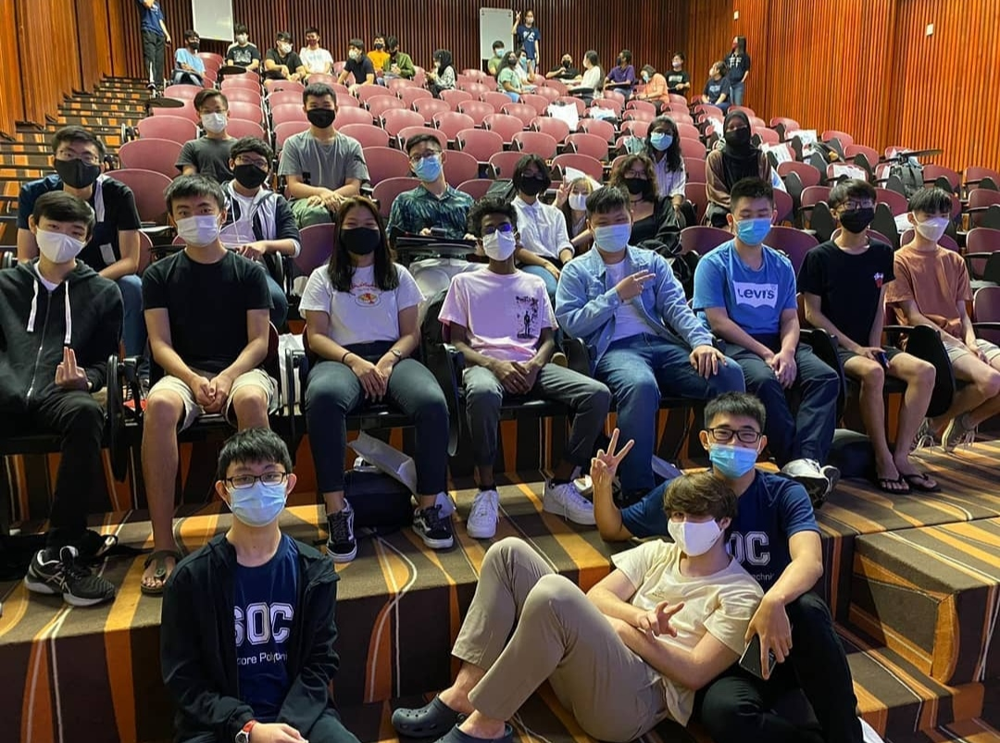

Singapore Polytechnic Experience
View first impressions and things about Singapore Polytechnic

View first impressions and things about Singapore Polytechnic
It has been 11 days since school started. When I first walked into SP on 14 April 2021 for a freshman orientation program, I was actually kind of excited to meet new people and see new things. My first impression of SP is that it is really big. There are many buildings in SP which some are pretty cool. They are built in different styles. When I was like trying to find my way to T22 that day, I spend like 20 minutes trying to find and walk there. There are so many stairs and turns which is kind of confusing. Luckily, after walking a few times, at least now I can find my way to T22, T21, T19, and FC6.My first impression towards my personal tutor and classmate are quite good as I felt that they are quite welcoming and nice.We bonded well together during the orientation programme despite it being quite short.
My class is a comparably small class which only consists of 19 people. They are quite helpful, when I have doubts and questions, they will be able to help/answer me. I do have fun interacting with them. For some of the people in the class, I have already known them previously as we have a small WhatsApp group for DAAA.So like it is quite easy for me to mix with them. I have also made nice friends in class like Gabriel, Justin, David, and Ella. We often hang out together to study or to have lunch.
The classes in SP are very different compared to secondary school. In secondary school, there is a fixed classroom for lessons and 1 class there are about 40 people. In contrast, in SP, there are separate classrooms for different modules and there are only 19-20 people per class. Most importantly, there is an air-con in every classroom so the environment is quite conducive for learning.
Well, for the lessons, the lessons in SP are very intensive, there are a lot of things about self-directed learning and personal responsibility so time management is important. We need to do extra search-ups after school so that we will have a better understanding of things taught in class. Additionally, the people in my class are all muggers so since the first week of school, I had been staying up till 2 am to do my module work. With CA2, coming in less than a month, the workload has become heavier and more time has to be spent. For poly, it is unlike secondary when your teachers will chase you for your homework if you never do. In SP, everything is on yourself, you need to take the initiative to check on various things and if you are late for an assignment, it is equivalent to 0 marks. However, the teachers I have met are really kind as they answered all the doubts I have in lessons and have tried to help me a lot with the assignments.
For food in SP, the chicken rice and the Taiwanese food in FC4 is the best !! .The food is nice and the price is also affordable. The waffle and the teriyaki ball store in FC6 are the second best. (Personal opinion). But as FC4 is a bit far from T2X, so for convenience wise, I visited FC6 more frequently as it is just below T2X. Till today, I have only managed to visit FC4,5and 6 . Hope that one day can have a chance to visit FC1-3 too HAHA. But overall, I think every food court has something special.
Well, SP is really big and I have just only explored a small part of it (sometimes I still get lost) so in the next 3 years of polytechnic life, there is a lot for me to explore. Academics-wise, I will put in 120% in every assignment, hopefully, I can get a 4.0 GPA in the end, continue my studies and eventually achieve my dream.
 ZhuoFan
Now
ZhuoFan
Now